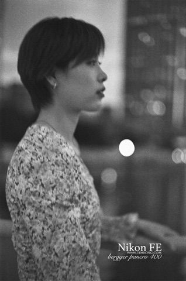
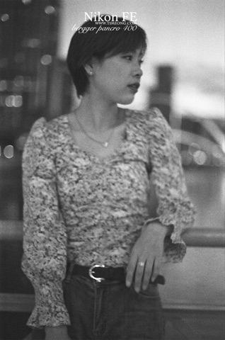

Bergger
在产
Pancro 400 胶卷
- 感光度
- ISO 400
- 类型
- 全色性
- 颗粒
- 中等颗粒
- 尺寸
- 35mm · 120 · 4x5
- 分类
- 电影卷
- 状态
- 在产
特性 / 手感 · Character
法国 Bergger 经典高速黑白，宽动态、细腻、灰阶油润、带电影感，人像/街头/纪实皆有迷人层次。
Bergger's classic fast black-and-white. Wide dynamic range, fine grain, oily cinematic greys - beautiful layers for portrait, street and documentary.
适用场景 · Best for
电影感 人像 街头
使用感受
法国 Bergger 的代表作，2017 年推出，最大的特点是双层乳剂。 【适合拍】风光、纪实、高反差场景——中低反差、动态范围广，高光细节保留得特别好，黑白层次拉得很开。 【特点】它把两种不同粒径的乳剂叠在一起，因此颗粒质感独特：整体颗粒不算细，但结构耐看，且对推拉（push/pull）都相当宽容。 【争议】高光区的颗粒偏明显，有人很喜欢这种「沙感」，也有人觉得粗糙；品牌小众、价格不便宜、国内渠道有限。
参考价格 · Price
停产卷通常只有二手价 · 价格随市场波动，仅供参考
全新 New
135约¥110–140
120约¥125–180
二手 Used
135待补
120待补
实拍样片


© 观察家摄影